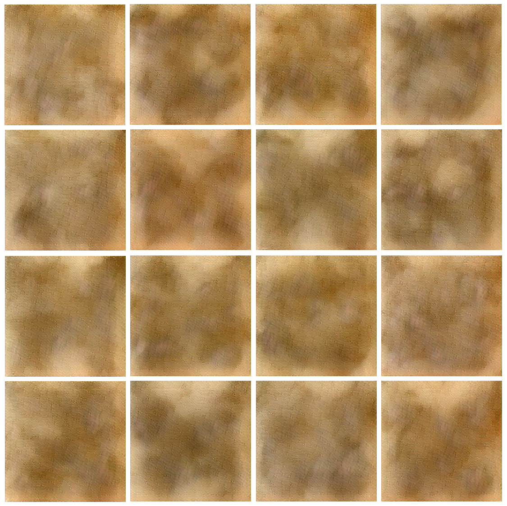
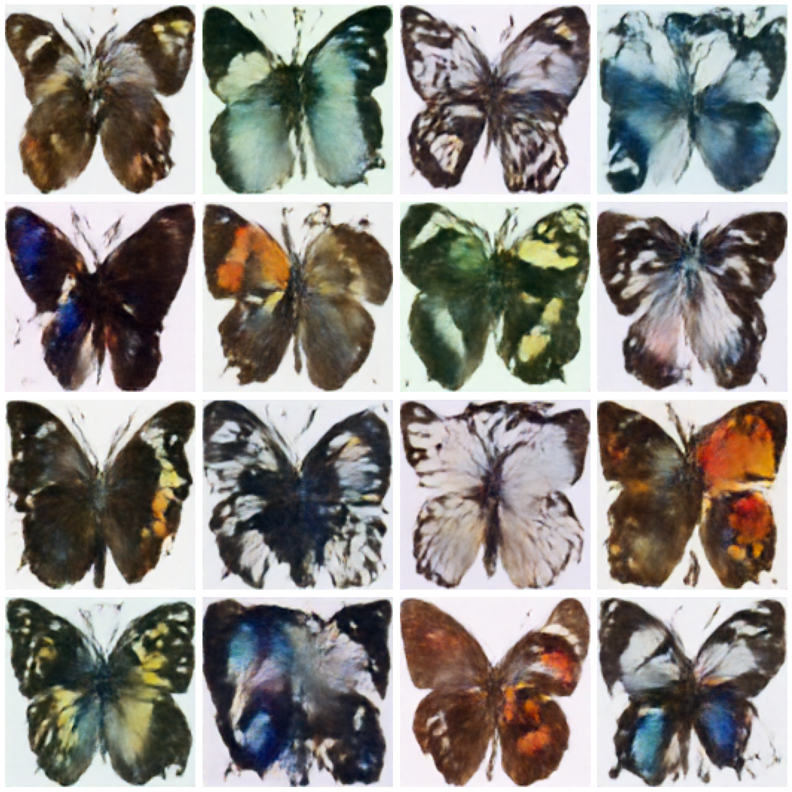

A while ago this whole guided diffusion thing made waves in the ML world and provided us with amazing images of anthropomorphized cucumbers walking chiwawas. Of course, I tried my best to understand this amazing technology as well as play around with various open-source implementations.
My post on vector-quantized VAE’s was the first part of trying to implement parts of these Rube-Goldberg machines. Unfortunately, life and laziness happened, in addition to the remaining components being a bit more difficult to implement imo. I decided to try and recreate a portion of a popular form of guided diffusion model called a UNET Ronneberger, Fischer, and Brox (2015) based on the implementation in the codebase for stable diffusion.
In the end, it turns out sometimes following some code pretty closely but trying to also ‘code it on your own’ is still kinda frustrating. The reasons they code things up a certain way is not always clear, and I ended up breaking things and had a rough time debugging various discrepancies and unintended memory issues with my broken implementations. Additionally, the UNET in stable diffusion processes the images after they’ve been transformed into a latent space by a VAE…. My initial attempts at trying to put these two pieces together produced some….uninspiring results as seen in Figure 1.

Figure 1: Look closely, you can see some butterflies in there
Anyway, this post is gonna be about my UNET implementation, and there will be some images of fake butterflies at the end! As always, I’m going to scold you for reading some random dude’s blog instead of looking at the following:
Paper about diffusion models: Ho, Jain, and Abbeel (2020)
Paper about latent diffusion: Rombach et al. (2022)
Paper about the UNET architecture: Ronneberger, Fischer, and Brox (2015)
Diffusion models are based around the random process of….diffusion…in which an input has noise slowly added to it until it is pure noise. There’s some physics background on this but sorry physicists, the AI people are in charge of all science now and have even taken your nobel prizes. I present an incomplete description of the process here, but really just read Ho, Jain, and Abbeel (2020).
We consider a series of inputs \(x_t\): \(t \in {0,1,...T}\). They describe the diffusion process as \(p_{\theta}(x_0) := \int p_{\theta}(x_{0:T})dx_{1:T}\). They begin by defining the ‘reverse process’, that is, the process that takes noise and maps it back to the input. It is defined as a Markov chain with Gaussian transitions: \[
\begin{align}
p_{\theta}(x_{0:T}):= p(x_T) \prod_{t=1}^T p_{\theta}(x_{t-1}\vert x_t) \quad \quad p_{\theta}(x_{t-1}\vert x_t) := \mathcal{N}(x_t;\mu_{\theta}(x_t,t), \Sigma_{\theta}(x_t, t))
\end{align} \label{eq1}\tag{eqn-1}
\]
i.e. we have some image \(x_t\), and we ‘transition’ to a different (hopefully denoised) image \(x_{t-1}\) by adding a draw from a normal distribution with mean and variance dependent on \(x_t\) and the timestep \(t\).
The other part of the model is the forward process, which adds noise based on a series of coefficients \(\beta_1, \beta_2, ..., \beta_T \in (0,1)\):
That is, the forward process takes an input (say, an image) \(x_0\) and gradually transitions to a noise distribution centered at 0. If you look at the equation, it should make sense why this is: Each step has a mean that is closer to zero than the mean before it, and after sufficient steps, this is gonna be around 0 with high probability.
From here you can optimize the evidence lower bound as described in the VAE literature, except with \(x_0\) as the evidence and \(x_{1:T}\) is the latent representation \(z\). See my other post about VAE’s.
One particular property of the forward process is that we can sample an \(x_t\) at an arbitrary timestep in closed form:
It is a nice exercise to try and show that this is the case … no I’m not going to show it, I did it once and forgot okay, look at (\(\ref{eq2}\)) and cascade that second equality all the way back to \(x_0\) to show that it is the case.
The objective reduces to something where we randomly sample elements of the forward process and optimize the evidence lower bound by optimizing the paramers of the model, which are currently \(\beta_t\) and \(\theta\). In Ho, Jain, and Abbeel (2020) They hold fixed \(\beta\), as well as reparametrize the elements of the reverse process \(p_{\theta}(x_{0:T})\), which we notice were defined by two parameterized functions \(\mu_{\theta}(x_t,t)\) and \(\Sigma_{\theta}(x_t, t)\). Well, first they actually just set the variance to be fixed to: \(\Sigma_{\theta}(x_t, t) = \sigma_t^2\mathbf{I}\), where they experiment with a couple schemes for the values of \(\sigma_t^2\) based on \(\beta_t\) which seemed to both work well.
Forget what \(\tilde{\mu}\) is, or read the paper for the details … the tldr of this whole thing is that what we need to optimize in the end is this \(\epsilon_{\theta}(x_t, t)\) function which predicts the noise component of \(x_t\). That is, the training simply consists of training a model to predict the noise component given an input \(x_t\) and timestep \(t\).
The math works out that to get the ‘previous sample’ \(x_{t-1} \sim p_{\theta}(x_{t-1} \vert x_t)\) we can simply compute: \[x_{t-1} = \frac{1}{\sqrt{\alpha_t}}(x_t - \frac{\beta_t}{\sqrt{1-\bar{\alpha}_t}}\epsilon_{\theta}(x_t, t)) + \sigma_t z \quad \quad z \sim \mathcal{N}(0, \mathbf{I})\label{eq4}\tag{eqn-4}\]
Mmmkay so this is the framework for training and sampling from an unconditional diffusion model. We will simply do the following:
Represent \(\epsilon_{\theta}(x_t, t)\) as a UNET that takes in a noisy image (\(x_t\)) and \(t\) as a timestep embedding.
Draw some \(\mathcal{N}(0, \mathbf{I})\) noise, some random timesteps, and produce noisy images according to (\(\ref{eq3}\))
Make ‘time embeddings’ from the integer timesteps and shove the time embeddings and noisy image through the UNET.
Compute MSE loss between the output and noise, compute loss, update.
Implementing the UNET
As for what I actually coded up for this, it was the UNET, the model which predicts the noise component from \(x_t\). I wanted to just…practice model building, so I built the UNET based on the OpenAI implementation in the codebase for stable diffusion. “So you copied it?”. No! I used it as a guide for developing my code. “So you copied it”. Sigh, fine yea pretty much, but even so it was a pain in the ass to actually get it to line up perfectly with their implementation:
My first attempt blew up the A100’s in Colab, I still have no idea why.
I had to meticulously go through each layer and figure out where discrepancies in layer/block sizes were. The stable diffusion code is a bit opaque…
Anyway, this post uses the code listed here, and I’ll go through some of it in this post, the notebook that uses the code in that repo is here.
The things to implement for the UNET:
The time embeddings
ResNet blocks that can incorporate a time embedding.
Attention blocks (attention + feed-forward)
Spatial transformers (basically expands the spatial dimensions into a ‘time’ dimension and attends over it)
Technically for the unconditional diffusion I don’t need 3. and 4. but I’ll include them anyway. Okay first the time embedding, this is almost literally copied from the stable diffusion repo. Lets take a look:
Code
def time_embeddings(t: torch.tensor, out_dim: int, max_period: int=10000):"""Create timestep embeddings from a vector of ints representing timesteps Args: t (torch.Tensor): Tensor of shape (B,) containing timesteps out_dim (int): Dimension of the output embeddings max_period (int): Maximum period for the sine and cosine functions Returns: torch.Tensor: Tensor of shape (B, out_dim) containing the timestep embeddings """ half = out_dim //2 denom = torch.exp(-torch.tensor(max_period).log() * torch.arange(0, half, dtype=torch.float32) / half ) denom = denom.to(t.device) phases = t[:, None] * denom[None]# concatentate to form a tensor of shape B x out_dim out_emb = torch.cat([phases.sin(), phases.cos()], dim=-1)# if out_dim is odd, add a zero columnif out_dim %2: out_emb = torch.cat([out_emb, torch.zeros_like(out_emb[:, :1])], dim=-1)return out_emb
This is essentially creating these \(d\)-dimensional sine-cosine embeddings according to
Yes, it really is, look at the form of whats inside the function and do some algebra, it is the same. Am I going to show you? No.
Okay we have these \(d\) dimensional embeddings that will get injected into each of the ResNet blocks. We’ll see how that happens below. The ResNet blocks consist of the following steps:
Resampling (either up-sample or down-sample), cutting dimension of the image in half.
Convolution layer
Addition of time embeddings
Output block consisting of groupnorm -> SiLU -> dropout -> convolution
These layers are used to reduce the spatial dimension of the image in 3. and increase (or decrease) the channel dimension usually in 6. The time embeddings work by first projecting the \(d\) dimensional embedding to the channel dimension via a linear layer and them element-wise adding this new embedding to every spatial dimension.
Code
class ResBlock(nn.Module):def__init__(self, channels_in, d_emb, channels_out=None, resample=None, dropout=0.0):super().__init__()self.channels_in = channels_inself.channels_out = channels_out or channels_inself.group_norm_in = nn.GroupNorm(32, channels_in)self.conv_in = conv_nd(2, channels_in, self.channels_out, 3, padding=1)self.conv_out = conv_nd(2, self.channels_out, self.channels_out, 3, padding=1)if resample =="down":self.resample_h = DownSample(channels_in, dims=2, use_conv=False)self.resample_x = DownSample(channels_in, dims=2, use_conv=False)elif resample =="up":self.resample_h = Upsample(channels_in, dims=2, use_conv=False)self.resample_x = Upsample(channels_in, dims=2, use_conv=False)else:self.resample_x =self.resample_h = nn.Identity()ifself.channels_out == channels_in:self.skip_connection = nn.Identity()else:self.skip_connection = conv_nd(2, channels_in, self.channels_out, 1)self.time_emb = nn.Sequential(nn.SiLU(), nn.Linear(d_emb, self.channels_out))self.out_block = nn.Sequential( nn.GroupNorm(32, self.channels_out), nn.SiLU(), nn.Dropout(dropout), self.conv_out )def forward(self, x: torch.tensor, emb: torch.tensor):""" Args: x (torch.tensor): Input tensor of shape (B, C, H, W) emb (torch.tensor): Time embedding of dimension (B, D) Returns: torch.tensor: Output tensor of shape (B, C*, H*, W*) """ h =self.group_norm_in(x) h = F.silu(h) h =self.resample_h(h) h =self.conv_in(h) emb =self.time_emb(emb) h = h + emb[:, :, None, None] # expand spatial dims, add along channel dim h =self.out_block(h) x =self.resample_x(x)return h +self.skip_connection(x)
In the above, the Upsample and Downsample classes are implemented either as convolutions with stride 2, or a simple average pooling operation that cuts the spatial dimension in half. In the forward implementation, you can see I’m adding the time embedding to the channel dimension via broadcasting over all spatial dimensions.
The other main layer type in the UNET is the spatial transformer, which, as I said before, is not really necessary in this unguided (no text embeddings) version of the diffusion model. There’s uh, a few pieces to this. There’s a standard cross-attention layer, which is meant to take in context. In this case, we are not using context embeddings, so we fix the query dimension to be the same as the key and value dimensions and simply have the inputs to the QKV projection layers be the same input….see below:
Cross-attention layers
class FeedForward(nn.Sequential):"""Feed forward module for the attention block. Has two linear layers with a GeLU and dropout layer in between. Args: d_in (int): Input dimension to the first linear layer. d_out (int): Output dimension of the second linear layer. mult (int): Multiplier (of the input dimension) for the hidden dimension. Default: 4 dropout (float): Dropout rate. Default: 0.1 """def__init__(self, d_in, d_out, mult=4, dropout=0.1):super().__init__()self.proj_in = nn.Linear(d_in, int(d_in * mult))self.gelu = nn.GELU()self.dropout = nn.Dropout(dropout)self.proj_out = nn.Linear(int(d_in * mult), d_out)# Cross attention module, from scratchclass CrossAttention(nn.Module):"""Basic cross attention module. Args: d_q (int): Input dimension of the query. d_model (int): Inner dimension of the QKV projection layers. Default: 512 d_cross (int): Input dimension of the key and value inputs, for cross attention. Default: None n_heads (int): Number of attention heads. Default: 8 dropout (float): Dropout rate. Default: 0.0 """def__init__(self, d_q, d_model=512, d_cross=None, n_heads=8, dropout=0.0):super().__init__()assert d_model % n_heads ==0, f"n_heads {n_heads} must divide d_model {d_model}"if d_cross isNone: d_cross = d_qself.proj_q = nn.Linear(d_q, d_model, bias=False)self.proj_k = nn.Linear(d_cross, d_model, bias=False)self.proj_v = nn.Linear(d_cross, d_model, bias=False)self.proj_out = nn.Linear(d_model, d_q)self.dropout = nn.Dropout(dropout)self.n_heads = n_headsdef forward(self, x, context=None, mask=None):# prevent einops broadcastingif context isnotNone:assert ( x.shape[0] == context.shape[0] ), f"Batch size of x and context must match, found {x.shape[0]} and {context.shape[0]}"if context isNone: context = x q =self.proj_q(x) k =self.proj_k(context) v =self.proj_v(context)# at this point we've already flattened the h/w of the input q = einops.rearrange(q, "b n (h d) -> b h n d", h=self.n_heads) k = einops.rearrange(k, "b m (h d) -> b h m d", h=self.n_heads) v = einops.rearrange(v, "b m (h d) -> b h m d", h=self.n_heads) qk = einops.einsum(q, k, "b h n d, b h m d -> b h n m") / (q.shape[-1] **0.5)if mask isnotNone:# mask initially of shape b x m, need to expand to b x h x 1 x m mask = einops.repeat(mask, "b m -> b h () m", h=self.n_heads) min_value =-torch.finfo(qk.dtype).max qk.masked_fill_(~mask, min_value) qk = F.softmax(qk, dim=-1) out = einops.einsum(qk, v, "b h n m, b h m d -> b h n d") out = einops.rearrange(out, "b h n d -> b n (h d)") out =self.dropout(self.proj_out(out))return out
The spatial transformer is essentially a wrapper around blocks that contain some number of these cross-attention blocks. In the forward pass, we flatten the spatial dimensions into a single dimension and attend over this dimension:
Code
class SpatialTransformer(nn.Module):"""Spatial transformer module for the UNet architecture. Contains cross-attention layers that attend over the spatial dimensions of an image, while ingesting cross-attention embeddings from e.g. a text embedding model. Args: in_channels (int): Number of input channels. d_q (int): Input dimension of the query. d_cross (int): Input dimension of the key and value inputs, for cross attention. Default: None d_model (int): Inner dimension of the QKV projection layers. Default: 512 n_heads (int): Number of attention heads. Default: 8 dropout (float): Dropout rate. Default: 0.0 depth (int): Number of attention blocks. Default: 1 """def__init__(self, in_channels, d_q, d_cross=None, d_model=512, n_heads=8, dropout=0.0, depth=1 ):super().__init__()self.in_channels = in_channelsself.d_q = d_qself.d_cross = d_crossself.d_model = d_modelself.n_heads = n_headsself.norm = torch.nn.GroupNorm( num_groups=32, num_channels=in_channels, eps=1e-6, affine=True )self.conv_in = nn.Conv2d(self.in_channels, d_q, kernel_size=1, stride=1, padding=0)self.blocks = nn.ModuleList( [AttentionBlock(d_q, d_cross, d_model, n_heads, dropout) for _ inrange(depth)] )self.conv_out = nn.Conv2d(d_q, in_channels, kernel_size=1, stride=1, padding=0)def forward(self, x, context=None): x_in = x x =self.norm(x) x =self.conv_in(x) # B, d_q, H, W b, d_q, h, w = x.shape x = einops.rearrange(x, "b c h w -> b (h w) c") # attention mechanism expects B T Cfor b inself.blocks: x = b(x, context) x = einops.rearrange(x, "b (h w) c -> b c h w", h=h, w=w) x =self.conv_out(x)return x + x_in
MMkay, the definition of the full UNET model essentially builds these blocks into the UNET in a loop:
Code
class EmbeddingWrapper(nn.Sequential):""" Wrapper for a sequence of layers that take an input tensor and optionally either a tensor of time embeddings or context embeddings. """def forward(self, x: torch.tensor, t_emb: torch.tensor =None, context: torch.tensor =None):""" Args: x (torch.tensor): main input image tensor B x C x H x W t_emb (torch.tensor): time embedding B x t_emb_dim context (torch.tensor): context tensor B x d_cross to be passed as context to cross-attention mechanism. Returns: torch.tensor: output tensor """for layer inself:ifisinstance(layer, ResBlock): x = layer(x, t_emb)elifisinstance(layer, SpatialTransformer): x = layer(x, context)else: x = layer(x)return xclass UNET(nn.Module):"""A simpler implementation of the UNET at https://github.com/CompVis/stable-diffusion/blob/21f890f9da3cfbeaba8e2ac3c425ee9e998d5229/ldm/modules/diffusionmodules/openaimodel.py Here I force the use of spatial attention when adding the guidance layers. Args: channels_in (int): number of input channels channels_model (int): number of initial channels which is then multiplied by the values in `channel_mults` channels_out (int): number of output channels context_dim (int): context dimension when performing guided diffusion d_model (int): embedding dimension of the attention layers t_emb_dim (int): time embedding dimension channel_mults (list): list of channel multipliers which will determine the number of channels at each block depending on `channels_model` attention_resolutions (list): list of attention resolutions where attention is applied dropout (float): dropout rate """def__init__(self, channels_in: int, channels_model: int, channels_out: int, context_dim: int, d_model: int, t_emb_dim: int=None, channel_mults: list[int] = [1, 2, 4, 8], attention_resolutions: list[int] = [2, 4], dropout: float=0.0, ):super().__init__()self.channel_mults = channel_multsself.channels_in = channels_inself.channels_model = channels_modelself.context_dim = context_dimself.t_emb_dim = t_emb_dim or channels_model# will fill up the downsampling and upsampling trunks in for loopsself.down_blocks = nn.ModuleList( [EmbeddingWrapper(nn.Conv2d(channels_in, channels_model, kernel_size=3, padding=1))] )self.up_blocks = nn.ModuleList() track_chans = [channels_model] ch_in = channels_model# create each downsampling trunkfor i, mult inenumerate(channel_mults):# lets assume 1 depth for each downsampling layer# append the reblock first, then spatial transformer# what is timestep dimension???? t_emb -> d_t -> d_model ch_out = channels_model * mult resblock = ResBlock(channels_in=ch_in, d_emb=self.t_emb_dim, channels_out=ch_out) layers = [resblock]if i in attention_resolutions: sp_transformer = SpatialTransformer( in_channels=ch_out, d_q=ch_out, d_cross=context_dim if context_dim else ch_out, d_model=d_model, dropout=dropout, n_heads=2, ) layers.append(sp_transformer)self.down_blocks.append(EmbeddingWrapper(*layers)) track_chans.append(ch_out)# downsample after every mult except the lastif i !=len(channel_mults) -1: res_ds = ResBlock( ch_out, d_emb=self.t_emb_dim, channels_out=ch_out, resample="down" )self.down_blocks.append(EmbeddingWrapper(res_ds)) track_chans.append(ch_out) ch_in = ch_out# middle block, this is Res, Attention, Res# ch_out is the last channel dimension for constructing the downsampling layersself.middle_block = EmbeddingWrapper( ResBlock(channels_in=ch_out, d_emb=self.t_emb_dim), SpatialTransformer( in_channels=ch_out, d_q=ch_out, d_cross=context_dim if context_dim else ch_out, d_model=d_model, dropout=dropout, ), ResBlock(channels_in=ch_out, d_emb=self.t_emb_dim), )# upsampling block# this block has 2x the channels, why? Because of the UNET architecture, we concatenate the channels from the corresponding layer of the downsample section.# There is also an additional res + attention block, this additional block 'matches' the channel dimension of the downsampling module in the downsampling trunk.for i, mult inreversed(list(enumerate(channel_mults))):# We assume there's two resblocks here for simplicity# first res block down_ch = track_chans.pop()# We have two of these, one that matches the Res + Transformer block, and another that matches the downsampling block# first res block res1 = ResBlock( ch_out + down_ch, d_emb=self.t_emb_dim, channels_out=channels_model * mult )# this block will output this many channels, we set it here since we want the next iteration to start the channels of the previous block. ch_out = channels_model * mult layers = [res1]if i in attention_resolutions: sp_trf = SpatialTransformer( in_channels=channels_model * mult, d_q=channels_model * mult, d_cross=context_dim if context_dim else channels_model * mult, d_model=d_model, dropout=dropout, ) layers.append(sp_trf)self.up_blocks.append(EmbeddingWrapper(*layers)) down_ch = track_chans.pop()# and again, same dimension ... layers = [] layers.append(ResBlock(ch_out + down_ch, d_emb=self.t_emb_dim, channels_out=ch_out))if i in attention_resolutions: layers.append( SpatialTransformer( in_channels=ch_out, d_q=ch_out, d_cross=context_dim if context_dim else ch_out, d_model=d_model, dropout=dropout, ) )# ... with an upsampling layer at all but the last, since at the last we are matching the initial convolutional layer and a res + spatial transformer block, not an upsampling layerif i >0: layers.append( ResBlock(ch_out, d_emb=self.t_emb_dim, channels_out=ch_out, resample="up") )self.up_blocks.append(EmbeddingWrapper(*layers))# output block that normalizes and maps back toself.out_block = nn.Sequential( nn.GroupNorm(32, channels_model), nn.SiLU(), nn.Conv2d(channels_model, channels_out, kernel_size=3, padding=1), )def forward(self, x, timesteps=None, context=None):""" Args: x (torch.tensor): input tensor timesteps (torch.tensor): Size (B,) tensor containing time indices to be turned into embeddings. context (torch.tensor): context tensor """if context isNone:assertself.context_dim isNone, "Must pass context if context_dimension is set"else:assert (self.context_dim isnotNone ), "You must set context_dim when creating the model if planning on passing context embeddings."if timesteps isnotNone: timesteps = time_embeddings(timesteps, self.t_emb_dim)# downsample downsampled = []for block inself.down_blocks: x = block(x, timesteps, context) downsampled.append(x)# middle block x =self.middle_block(x, timesteps, context)# upsamplefor block inself.up_blocks: x = torch.cat([x, downsampled.pop()], dim=1) x = block(x, timesteps, context) x =self.out_block(x)return x
Bleh, what a mess. You can look through the loop, but essentially we identify the number of input and output channels, as well as a ‘model channels’ dimension. This is the channel dimension which is multiplied by the i-th element of channel_mults at the i-th level of the UNET when it is downsampling, and in reverse (x8, x4 ,x2 ,x1) when upsampling. We additionally choose the levels at which we perform context-embedding with attention_resolutions, but again, we just ignore that in the case by setting context_dim to None.
Training
Just see the notebook if you wanna run something, but I’ll go over the inner part of training as well.
Code
for step, batch inenumerate(train_dataloader):with torch.autocast("cuda"):input= batch['images'].to(device) timepoints = torch.LongTensor(input.shape[0]).random_(0, dconfig.n_timesteps).to(device) # 1 noise = torch.randn_like(input).to(device) # 2 noisy_input = noise_scheduler.add_noise(input, noise, timepoints) # 3with accelerator.accumulate(model): out = model(noisy_input, timesteps = timepoints) # 4# compute MSE between this and the NOISE loss = torch.nn.functional.mse_loss(out, noise) # 5 optimizer.zero_grad() accelerator.backward(loss) accelerator.clip_grad_norm_(model.parameters(), 1.0) optimizer.step() lr_scheduler.step() epoch_loss.append(loss.item())
Ignore the stuff that isn’t defined, we are doing the following:
We create a random set of integer timepoints between 0 and a user-selected maximum number of timepoints, here 1000.
We sample some \(\mathcal{N}(0, \mathbf{I})\) noise.
We use \(\ref{eq3}\) to produce noisy samples from the forward process at random timepoints. The diffusers package has implemented this computation.
Use our UNET to preduct the noise from the noisy inputs, also passing the timepoints, which internally get embedded as we discussed.
We compute the MSE loss between the predicted noise and the \(\mathcal{N}(0, \mathbf{I})\) noise and perform model updates.
Sampling
To to this, we simply implement \(\ref{eq4}\), using implementations in the diffusers package:
Code
# Do the diffusion process, start with noise...cur_img = torch.randn(16, 3, 128, 128, dtype=torch.float32).to(device)pbar = tqdm.tqdm(noise_scheduler.timesteps)for t in pbar:with torch.no_grad(): timesteps = torch.LongTensor([t]*cur_img.shape[0]).to(device)# predict the noise component noisy_residual = model(cur_img, timesteps)# reverse the diffusion process using the predicted noise previous_noisy_sample = noise_scheduler.step(noisy_residual, t, cur_img).prev_sample cur_img = previous_noisy_sample
Specifically, this noise_sheduler object is implementing (\(\ref{eq4}\)), and you can see it ingests everything needed in the equation. I’m assuming \sigma_t is set to something internally, perhaps \(\beta_t\) as suggested in the paper, though there are different schedulers that probably implement different schemes. Would be a nice exercise to dig in and verify whats going on in there…
Anyway, after training and producing samples on the Smithsonian Butterflies dataset, we can produce some weird butterflies from pure noise:

Figure 2: Honestly, kind of an interesting watercolor look to em.
Next Up…
Okay so now I want to actually try this with some text guidance, and with the VAE at the start. The idea is essentially, instead of an image, we’ll ingest the lower-dimensional representation at the bottleneck of a pretrained VAE, and actually add some context embeddings via some pretrained text embedding model like CLIP (Radford et al. (2021)). Also I need a dataset that actually has image-text pairs…sigh.
Radford, Alec, Jong Wook Kim, Chris Hallacy, Aditya Ramesh, Gabriel Goh, Sandhini Agarwal, Girish Sastry, et al. 2021. “Learning TransferableVisualModelsFromNaturalLanguageSupervision.” arXiv. https://doi.org/10.48550/arXiv.2103.00020.
Rombach, Robin, Andreas Blattmann, Dominik Lorenz, Patrick Esser, and Björn Ommer. 2022. “High-ResolutionImageSynthesis with LatentDiffusionModels.” arXiv. https://doi.org/10.48550/arXiv.2112.10752.
Ronneberger, Olaf, Philipp Fischer, and Thomas Brox. 2015. “U-Net: ConvolutionalNetworks for BiomedicalImageSegmentation.” arXiv. https://doi.org/10.48550/arXiv.1505.04597.